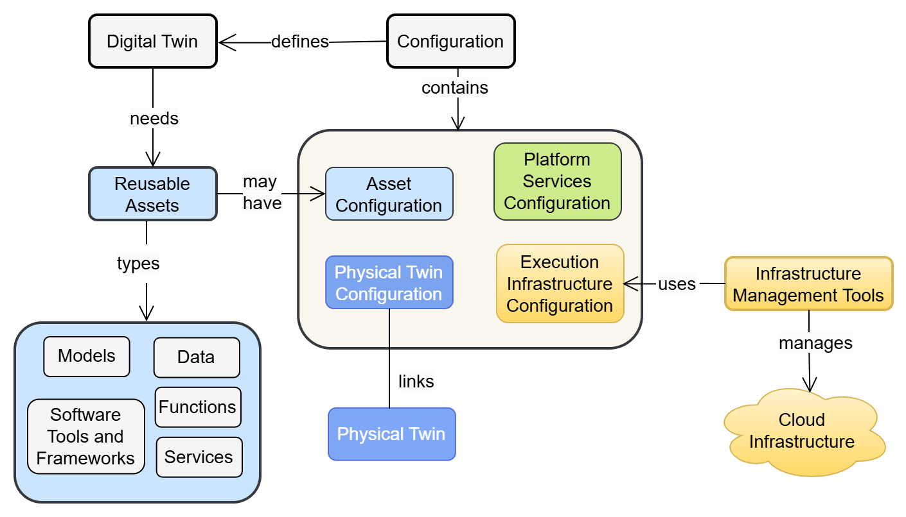
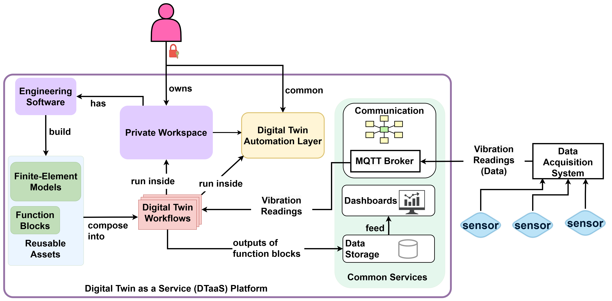
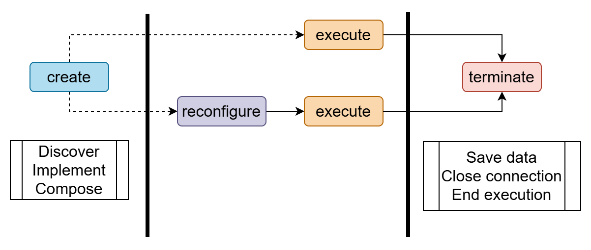
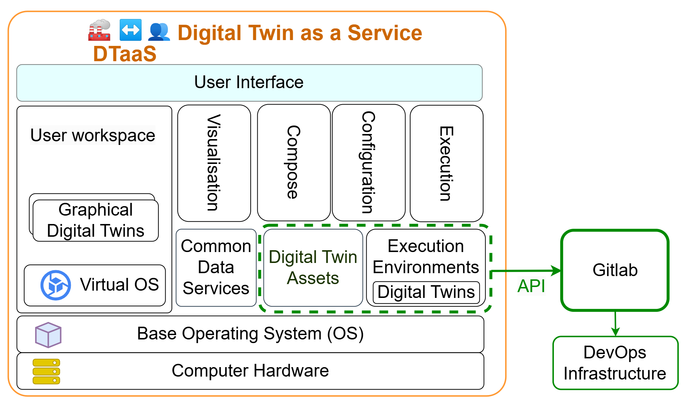
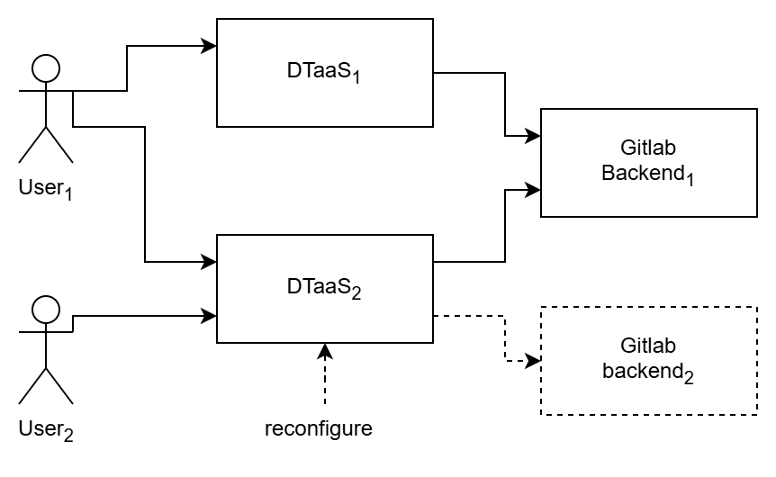
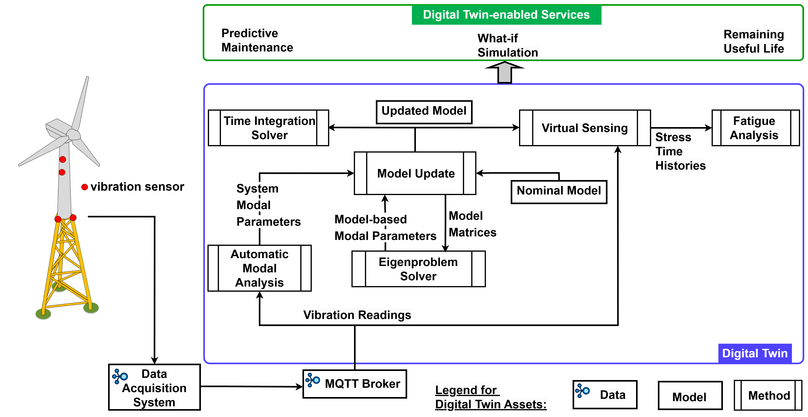

DTaaS Research Overview
DTaaS Research Overview
This document summarises the research behind the DTaaS platform. It is written for code contributors who need to understand the design rationale, architectural decisions, and intended evolution of the system.
1.  Introduction
Introduction
A digital twin is a software representation of a physical asset that stays connected to its real-world counterpart through data exchange, enabling monitoring, analysis, and prediction throughout the asset lifecycle. Digital twin platforms provide shared infrastructure for creating, managing, and executing digital twins at scale.
DTaaS (Digital Twin as a Service) is an open-source platform that treats digital twins as compositions of reusable assets rather than monolithic applications. The platform organises assets into four categories: data, models, functions (methods and scripts), and services. Users compose these assets into digital twin configurations that can be executed, monitored, and evolved independently.

The platform targets operability: creating, configuring, executing, monitoring, and evolving twins in long-running environments. This focus distinguishes DTaaS from simulation-only tools or pure modelling frameworks.
2.  Requirements
Requirements
Eight core requirements drive the platform design:
- Author — create and edit digital twin assets in isolated workspaces
- Consolidate — combine assets from different sources into coherent twin configurations
- Configure — set parameters for execution without modifying asset source code
- Execute — run digital twin configurations on demand or continuously
- Explore — browse available assets, twins, and execution results
- Save — persist configurations, results, and intermediate state
- What-if Analysis — evaluate alternative scenarios by varying parameters
- Collaborate — share assets and twins across users and organisations
These requirements apply across domains. Validated case studies include food fermentation process control and indoor climate management for firefighter training, as well as structural health monitoring of civil infrastructure.
3.  System Architecture
System Architecture

The architecture decomposes the platform into four concern areas:
- Gateway and authentication — Traefik reverse proxy with OAuth 2.0 / OpenID Connect for route protection and user identity management
- Execution management — backend services that trigger, monitor, and stop digital twin runs via GitLab CI/CD pipelines
- Reusable-asset handling — library microservice backed by GitLab repositories, exposing asset discovery and retrieval APIs
- Workspace isolation — per-user JupyterLab containers with private file systems for authoring and running assets

This decomposition maps directly to the service split in the current codebase: the React client handles user interaction, Traefik manages routing and TLS, the library microservice wraps GitLab APIs for asset management, and the execution service orchestrates pipeline triggers.

4.  User View
User View

From a user perspective, DTaaS presents a single web interface that aggregates workspace operations, asset browsing, digital twin execution, and result exploration. Users interact with their own isolated workspace while sharing assets through the common library. The platform supports both class-level twin definitions (reusable templates) and instance-level twins (bound to specific physical assets).

5.  Lifecycle-Driven Engineering
Lifecycle-Driven Engineering

Lifecycle coverage is a first-class requirement, not an add-on. The platform explicitly supports create, manage, execute, and stop phases with iterative reconfiguration flows. This is why client and backend contracts include both file management and execution tracking concerns.
The lifecycle model acknowledges that digital twins evolve: models are updated as physical assets change, new data sources are integrated, and execution configurations are refined based on operational experience.
6.  DevOps and Federation
DevOps and Federation

DTaaS integrates GitLab-backed DevOps automation as a core platform capability. Repository structure, pipeline triggers, and OAuth configuration are part of the platform contract, not just deployment details. The platform supports two execution modes: continuous (long-running services) and one-off (batch analysis jobs), both managed through GitLab CI/CD pipelines.
Related recordings:

The federation extension enables multiple DTaaS instances to collaborate by discovering and reusing assets across organisational boundaries. Federated digital twins can be organised as composites (assembled from assets on different instances), fleets (coordinated groups), or hierarchies (parent-child relationships).
Related recording:

7.  Application: Structural Health Monitoring
Application: Structural Health Monitoring

Structural health monitoring (SHM) of civil infrastructure demonstrates DTaaS as an integration substrate for specialized engineering workflows. In this application domain, digital twin assets include sensor data acquisition modules (accelerometers, distributed optical sensors), operational modal analysis functions, finite element model updating procedures, and fatigue-based remaining useful life estimation methods.
The SHM workflow composes these assets into a pipeline: sensor data flows through modal analysis to extract structural properties, which feed into model updating to calibrate a finite element model, which in turn drives damage prognosis and remaining useful life estimation. This demonstrates that DTaaS enables domain specialists to compose complex workflows from reusable building blocks without replacing their existing tools.
 Guidance for Contributors
Guidance for Contributors
When implementing or reviewing DTaaS changes:
- Map the change to one of the concern areas above (architecture, lifecycle, DevOps/federation, domain application, monitoring).
- Verify the change preserves intended lifecycle and composability behaviour.
- Check whether the change shifts architecture boundaries (gateway/auth, execution manager, reusable-asset layer, workspace isolation).
- Document any intentional departure from design assumptions.
Common anti-patterns to avoid:
- Hard-coding one modeling or tooling workflow where the design expects heterogeneity.
- Collapsing layered responsibilities into UI code for short-term convenience.
- Treating DevOps and federation behaviour as optional integration noise.
 References
References
The research behind DTaaS is documented in the following papers.
- Composable Digital Twins on Digital Twin as a Service Platform
— Defines the core platform architecture,
asset model, lifecycle phases, and system requirements.
(
Talasila, Prasad, et al., Composable digital twins on Digital Twin as a Service platform." Simulation 101.3 (2025): 287-311.) - Realising Digital Twins — Positions DTaaS
within the broader digital twin landscape with a comparative
survey of existing frameworks, cloud deployment strategies, and
fleet management concepts.
(
Talasila, Prasad, et al. "Realising digital twins." The engineering of digital twins. Cham: Springer International Publishing, 2024. 225-256.) - Towards Federated Digital Twin Platforms
— Extends DTaaS for multi-instance
federation, DevOps integration, and cross-organizational
asset reuse.
(
Frasheri, Mirgita, Prasad Talasila, and Vanessa Scherma. "Towards federated digital twin platforms." arXiv preprint arXiv:2505.04324 (2025).) - Structural Health Monitoring of Engineering Structures Using
Digital Twins — Demonstrates DTaaS for
vibration-based SHM with modal analysis and model updating
workflows.
(
Talasila, P., et al. "Structural health monitoring of engineering structures using digital twins: A digital twin platform approach. "International Conference on Experimental Vibration Analysis for Civil Engineering Structures. Cham: Springer Nature Switzerland, 2025.)